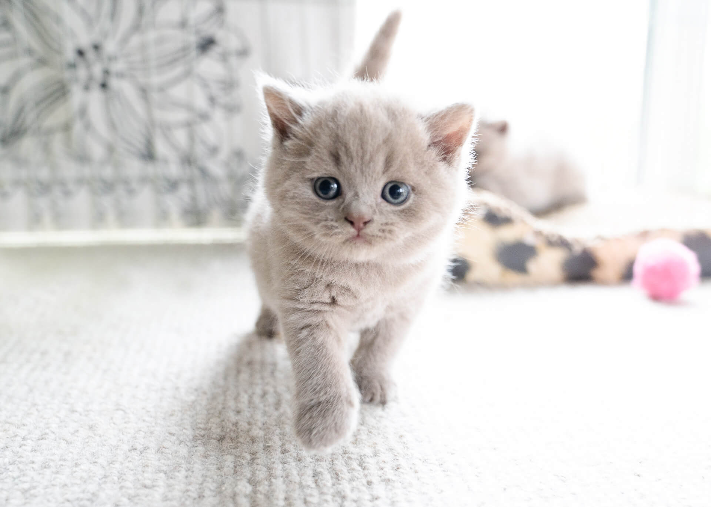

Adoptable Pets
Cats

Name: Coco
Female | Siamese | Calm and independent.Name: Misty
Female | Maine Coon | Playful girl.

Name: London
Male | British Shorthair | Curious yet polite.
Name: Poppy
Female | Ragdoll | Affectionate and clingy.
Name: Leo
Male | Bengal | Energetic and silly.
Name: Cheyann
Female | Persian | Sassy little girl.Dogs

Name: Angel
Male | Golden Retriever | Friendly and adorable.
Name: Lady
Female | Cavalier | Loyal little girl.
Name: Max
Male | Beagle | Happy and free.
Name: Molly
Female | Border Collie | Intelligent gal.
Name: Rocky
Male | Boxer | Reserved but loyal.
Name: Ruby
Female | Pomeranian | Playful ball of fluff.